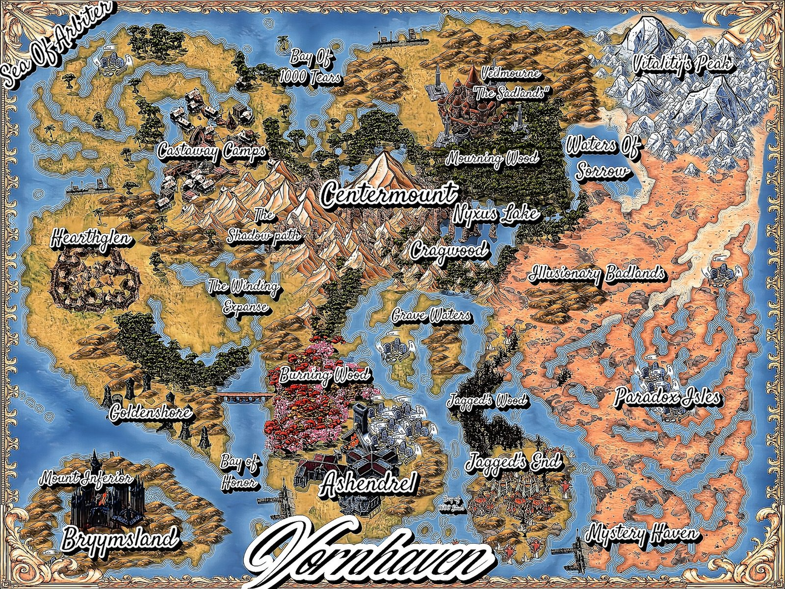

The World of Vornhaven
Vornhaven is the world of Kaitiaki’s book A Sorrowmancer’s Requiem — mapped, sigil-marked, and armed.

Vornhaven is the world of Kaitiaki’s book A Sorrowmancer’s Requiem — mapped, sigil-marked, and armed.
